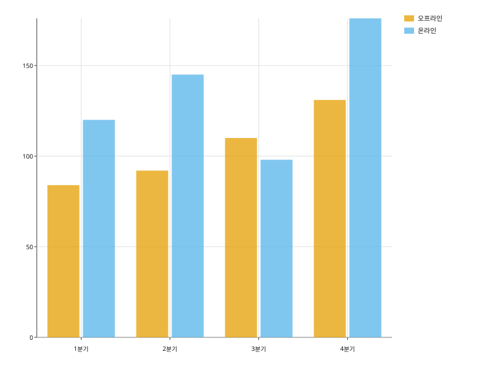

카테고리마다 막대 하나를 그린다. orient= 로 방향을, hue= 와 stacked= 로 그룹을 정한다.
import svgplot as sp
QUARTERS = {
"분기": ["1분기", "2분기", "3분기", "4분기", "1분기", "2분기", "3분기", "4분기"],
"매출": [120.0, 145.0, 98.0, 176.0, 84.0, 92.0, 110.0, 131.0],
"채널": ["온라인"] * 4 + ["오프라인"] * 4,
}ONE_ROW = {"분기": ["1분기", "2분기", "3분기", "4분기"], "매출": [120.0, 145.0, 98.0, 176.0]}
sp.barplot(ONE_ROW, x="분기", y="매출")
sp.barplot(QUARTERS, x="분기", y="매출", hue="채널")sp.barplot(QUARTERS, x="분기", y="매출", hue="채널", stacked=True)sp.barplot(QUARTERS, x="분기", y="매출", hue="채널", orient="h")